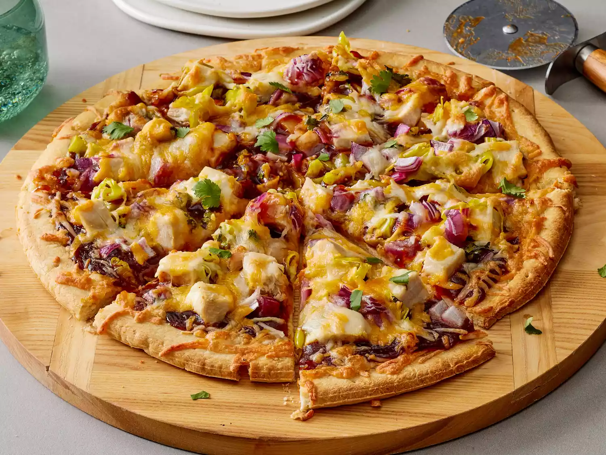

BBQ Chicken Pizza

Description
This BBQ chicken pizza has spicy barbecue sauce, diced chicken, peppers, onion, and cilantro, all covered
with cheese and baked to bubbly goodness! This is similar to a recipe I had at a popular pizza place in California. My family loves it!
Ingredients
- 1 (12 inch) pre-baked pizza crust
- 1 cup spicy barbeque sauce
- 2 skinless boneless chicken breast halves, cooked and cubed
- 1 cup sliced pepperoncini peppers
- 1 cup chopped red onion
- 1/2 cup chopped fresh cilantro
- 2 cups shredded Colby-Jack cheese
Directions
- Gather all ingredients. Preheat the oven to 350 degrees F (175 degrees C).
- Place pizza crust on a baking sheet. Spread barbeque sauce on crust.
- Top with chicken, pepperoncini peppers, onion, and cilantro.
- Cover with Colby-Jack cheese.
- Bake in the preheated oven until cheese is melted and bubbly, about 15 minutes.
Return to recipe page